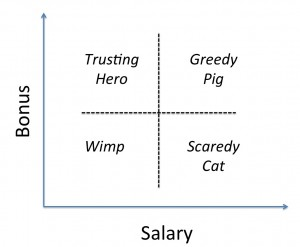

Name Your Price: Compensation at Whole Health Management (MONV, Tuesday, Week 1)
monvyear-twoSalary negotiation => some considerations
-- What do I want besides money? (strong ties with mentor; communicate confidence in myself)
-- Comparables (justification; reference point)
-- Long-term considerations (anchor value for the future)
One perspective:

{kind=link}
Sales jobs => commission structure usually more of the norm (low-high; "trusting hero")
Common mistake: salary negotiation can be a test; might be smart to leave a little bit on the table
Big three job search mistakes:
(1) Not relying on your full interest set
-- Bias towards measurement ($)
-- Bias on the short-term (first-year compensation)
-- Lack of introspection
(2) Ignoring recruiter's interests
-- As a recruiter (HR in big company)
-- As a boss/partner
-- As a manager (offer letters set a precedent for compensation within company)
(3) Transactional vs. repeated game
-- If you take the job, you have to work at the company. NOT a one-off negotiation.